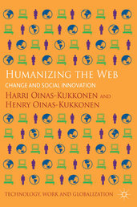
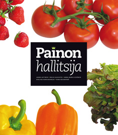

2012
Oinas-Kukkonen, H. A foundation for the study of behavior change support systems. Personal and ubiquitous computing, Online First.
http://link.springer.com/content/pdf/10.1007%2Fs00779-012-0591-5.pdf
2011
Keränen A-M, Strengell K, Savolainen M, Laitinen J. Effect of weight loss intervention on the association between eating behaviour measured by TFEQ-18 and dietary intake in adults. Appetite (2011); (56)156-162.
Komulainen T., Keränen A-M, Rasinaho E, Hakko H, Savolainen M, Kujari M-L, Reponen A, Lindeman S. Quitting a weight loss program is associated with anhedonia: the Lifestyle Intervention Treatment Evaluation Study in Northern Finland. International Journal of Circumpolar Health 2011;70:72-78.
Lehto T. & Oinas-Kukkonen H. Persuasive Features in Web-Based Alcohol and Smoking Interventions: A Systematic Review of the Literature. Journal of Medical Internet Research, 13(3), e46.
http://www.jmir.org/2011/3/e46/
Segerståhl K. & Oinas-Kukkonen H. Designing for personal exercise monitoring employing multiple modes of delivery: Implications from a qualitative study on heart rate monitoring. International Journal of Medical Informatics, Vol. 80, Issue 12, pp. e203-e213, December 2011.
http://www.ncbi.nlm.nih.gov/pubmed/21963231
2010
Alahuhta M, Ukkola T, Korkiakangas E, Jokelainen T, Keränen A-M, Kyngäs H, Laitinen J. Elintapamuutosvaihe sekä painonhallinnan onnistumisen edellytykset ja riskitekijät tyypin 2 diabeteksen riskihenkilöillä. Tutkiva hoitotyö 2010; (2) 4-13.
Keränen A-M, Rasinaho E, Hakko H, Savolainen M, Lindeman S. Eating behavior in obese and overweight persons with and without anhedonia. Appetite 2010; (55) 726-729.
Laitinen J, Korkiakangas E, Alahuhta M, Keinänen-Kiukaanniemi S, Rajala U, Timonen O, Jokelainen T, Keränen A-M, Remes J, Ruokonen A, Hedberg P, Husman P, Olkkonen S. Feasibility of videoconferencing in lifestyle group counseling. International Journal of Circumpolar Health 2010; 69(5):500-511.
2009
Keränen A-M, Savolainen M J, Reponen A H, Kujari M, Bloigu R, Lindeman S, Laitinen J. The effect of eating behavior on weight loss and maintenance during a lifestyle intervention. Preventive Medicine 2009; (49) 32-38.
Oinas-Kukkonen H. & Harjumaa M. Persuasive Systems Design: Key Issues, Process Model, and System Features. Communications of the Association for Information Systems, Vol. 24, Article 28, pp. 485-500, March 2009.
http://aisel.aisnet.org/cais/vol24/iss1/28/
2013
Alahäivälä T., Oinas-Kukkonen H. & Jokelainen T. Software Architecture Design for Health BCSS: Case Onnikka. PERSUASIVE 2013, Lecture Notes In Computer Science, vol. 7822. Springer, Berlin
http://link.springer.com/content/pdf/10.1007%2F978-3-642-37157-8_3.pdf
Karppinen P. & Oinas-Kukkonen H. Three Approaches to Ethical Considerations in the Design of Behavior Change Support Systems. Lecture Notes in Computer Science, 2013, Volume 7822, Persuasive Technology, pp. 87-98.
http://link.springer.com/content/pdf/10.1007%2F978-3-642-37157-8_12.pdf
2012
Langrial S., Lehto T., Oinas-Kukkonen H., Harjumaa M. & Karppinen P. Native Mobile Applications for Personal Well-Being: A Persuasive Systems Design Evaluation. In: 16th Pacific-Asia Conference on Information Systems, PACIS 2012 Proceedings.
http://aisel.aisnet.org/pacis2012/93/
Lehto T., Oinas-Kukkonen H. & Drozd F. Factors Affecting Perceived Persuasiveness of a Behavior Change Support System. International Conference on Information Systems (ICIS 2012), Orlando, Florida, December 16-19.
http://aisel.aisnet.org/icis2012/proceedings/HumanBehavior/18/
Lehto T., Oinas-Kukkonen H., Pätiälä T. & Saarelma 0. Consumers’ Perceptions of a Virtual Health Check: An Empirical Investigation. In: 20th European Conference on Information Systems, ECIS 2012 Proceedings, Paper 154.
http://aisel.aisnet.org/ecis2012/154
2009
Harjumaa M., Segerståhl K. & Oinas-Kukkonen H. Understanding Persuasive System Functionality in Practice: a Field Trial of Polar FT60. ACM International Conference Proceeding Series, Vol. 350, Proceedings of the Fourth International Conference on Persuasive Technology, Claremont, CA, USA, April 26-29, 2009.
http://dl.acm.org/citation.cfm?id=1541952
2013

Oinas-Kukkonen Harri & Oinas-Kukkonen Henry Humanizing the Web: Change and Social Innovation. Palgrave Macmillan, Basingstoke, UK.
http://us.macmillan.com/humanizingtheweb/HarriOinasKukkonen
Tämän päivän Internet on ensisijaisesti sosiaalinen toimintaympäristö. Facebook, Twitter ja muut sosiaalisen median nettisovellukset ovat tulleet laajallekin yleisölle hyvin tutuiksi, mutta näiden taustalla oleva ilmiö on paljon pitkäikäisempi ja syvällisempi kuin pelkästään juuri nyt suosiossa olevat nettisovellukset. Tämä ilmiö on nimeltään sosiaalinen web.
Oulun yliopiston tutkijaveljekset Harri ja Henry Oinas-Kukkonen ovat julkaisseet kirjan Humanizing the Web: Change and Social Innovation. Kirjassa kuvataan, miten sosiaalinen web muuttaa sitä, miten ihmisten odotetaan toimivan, mitä heidän odotetaan osaavan ja jopa millaisia heidän odotetaan olevan.
2012

Laitinen J, Alahuhta M, Keränen A-M, Korkiakangas E, Nevanperä N. Painonhallitsija. Työterveyslaitos